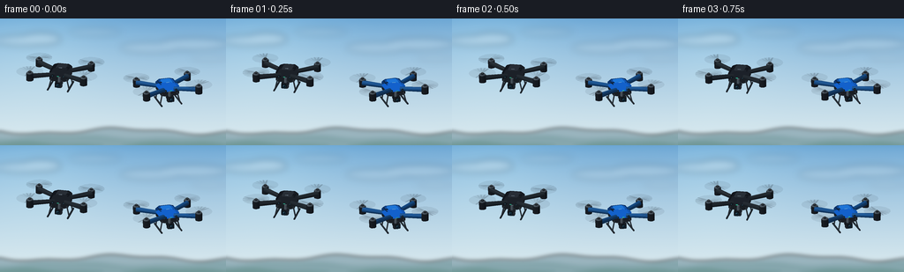
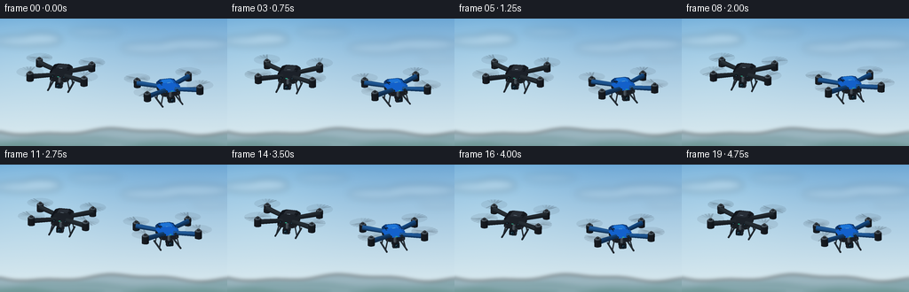

CODING AGENTS AS PIXEL WORLD MODELS
traex/GPT-6.1-Sol · instance_preservation_0043
点击播放 · 原生 RGB 像素
逐轮保存的候选
回放视频、检查图与代码变化。
每份候选均可单独播放。实际图片检查记录在下方工具轨迹中。
候选 01播放与检查图
点击播放 · 原生 RGB 像素


展开代码变化
--- 上一保存版本
+++ 本次保存版本
@@ -0,0 +1,202 @@
+"""Deterministic, locally drawn RGB animation of two hovering quadcopters."""
+from pathlib import Path
+import math, json
+import numpy as np
+from PIL import Image, ImageDraw, ImageFilter
+import artifact_io
+
+ROOT=Path(__file__).resolve().parent
+SPEC=json.loads((ROOT/'task_spec.json').read_text())
+W,H=SPEC['width'],SPEC['height']; SS=4
+rng=np.random.default_rng(214)
+
+# A distant landscape and luminous, lightly clouded sky. All procedural.
+def make_background():
+ w,h=W*SS,H*SS
+ yy,xx=np.mgrid[0:h,0:w]; v=yy/h
+ top=np.array([105,165,212.]); bottom=np.array([220,235,239.])
+ a=v[...,None]**.7
+ rgb=top*(1-a)+bottom*a
+ glow=np.exp(-((xx/w-.15)**2/.11+(yy/h-.12)**2/.28))[...,None]
+ rgb+=glow*np.array([14,13,8])
+ noise=rng.normal(0,.24,(h,w,1)); rgb=np.clip(rgb+noise,0,255)
+ img=Image.fromarray(rgb.astype(np.uint8),'RGB')
+ clouds=Image.new('RGBA',(w,h)); d=ImageDraw.Draw(clouds)
+ for x,y,rx,ry,opacity in [(26,25,30,6,48),(46,23,23,7,57),(107,15,30,4,32),(170,33,34,6,36),(219,29,39,7,44),(237,45,21,3,25)]:
+ d.ellipse(((x-rx)*SS,(y-ry)*SS,(x+rx)*SS,(y+ry)*SS),fill=(255,253,247,opacity))
+ clouds=clouds.filter(ImageFilter.GaussianBlur(4*SS)); img=Image.alpha_composite(img.convert('RGBA'),clouds)
+ land=Image.new('RGBA',(w,h)); d=ImageDraw.Draw(land)
+ for k,(base,amplitude,col) in enumerate([(128,6,(137,166,177,200)),(134,4,(118,154,161,215)),(142,4,(101,143,142,230))]):
+ pts=[]
+ for x in range(-5,W+6):
+ y=base+amplitude*(.5*math.sin(x/.0 if False else x/29+k*2)+.2*math.sin(x/11+k))
+ pts.append((x*SS,y*SS))
+ d.polygon(pts+[(w,h),(0,h)],fill=col)
+ land=land.filter(ImageFilter.GaussianBlur(2.2*SS)); img=Image.alpha_composite(img,land)
+ return img.convert('RGB')
+BG=make_background()
+
+# Hand-authored geometry with simple diffuse/specular surface illumination.
+LIGHT=np.array([-0.5,.85,0.5]); LIGHT/=np.linalg.norm(LIGHT)
+VIEW=np.array([0,.41,1.]); VIEW/=np.linalg.norm(VIEW)
+RIGHT=np.array([1.,0,0]); UP=np.cross(VIEW,RIGHT)
+
+class Model:
+ def __init__(self): self.faces=[]; self.discs=[]
+ def face(self,p,color,shine=.0):
+ self.faces.append((np.array(p,float),color,shine))
+ def box(self,center,size,color,bevel=0):
+ c=np.array(center); x,y,z=np.array(size)/2
+ if bevel:
+ # Rounded-corner outline, with sloped edges around the upper deck.
+ def ring(sx,sz,yv,b):
+ return np.array([[-sx+b,yv,-sz],[sx-b,yv,-sz],[sx,yv,-sz+b],[sx,yv,sz-b],[sx-b,yv,sz],[-sx+b,yv,sz],[-sx,yv,sz-b],[-sx,yv,-sz+b]])+c
+ r0=ring(x,z,-y,bevel)
+ r1=ring(x,z,y*.45,bevel)
+ r2=ring(x-bevel*.35,z-bevel*.35,y,bevel*.8)
+ self.face(r2,color,.3);self.face(r0[::-1],color)
+ for a,b in [(r0,r1),(r1,r2)]:
+ for i in range(8): j=(i+1)%8;self.face([a[i],a[j],b[j],b[i]],color,.25)
+ else:
+ p=np.array([[-x,-y,-z],[x,-y,-z],[x,y,-z],[-x,y,-z],[-x,-y,z],[x,-y,z],[x,y,z],[-x,y,z]])+c
+ for inds in [(0,3,2,1),(4,5,6,7),(3,7,6,2),(0,1,5,4),(1,2,6,5),(0,4,7,3)]: self.face(p[list(inds)],color,.15)
+ def tube(self,a,b,r,color,n=14,r2=None):
+ a=np.array(a,float); b=np.array(b,float); axis=b-a; axis/=np.linalg.norm(axis)
+ side=np.cross(axis,[0,1,0] if abs(axis[1])<.9 else [1,0,0]);side/=np.linalg.norm(side)
+ other=np.cross(axis,side); ang=np.arange(n)*2*np.pi/n
+ circle=np.cos(ang)[:,None]*side+np.sin(ang)[:,None]*other
+ p=a+circle*r; q=b+circle*(r if r2 is None else r2)
+ self.face(p[::-1],color,.12);self.face(q,color,.3)
+ for i in range(n): j=(i+1)%n;self.face([p[i],p[j],q[j],q[i]],color,.22)
+ def ellipsoid(self,c,r,color,n=24,m=12):
+ c=np.array(c);r=np.array(r)
+ for j in range(m):
+ ph0=-np.pi/2+j*np.pi/m;ph1=ph0+np.pi/m
+ for i in range(n):
+ t=i*2*np.pi/n;u=(i+1)*2*np.pi/n
+ pts=[]
+ for p,a in [(ph0,t),(ph0,u),(ph1,u),(ph1,t)]:pts.append(c+r*np.array([math.cos(p)*math.cos(a),math.sin(p),math.cos(p)*math.sin(a)]))
+ self.face(pts,color,.35)
+
+
+def drone(blue):
+ m=Model(); shell=(20,104,218) if blue else (30,35,42)
+ arm=(23,78,138) if blue else (35,42,48)
+ dark=(27,31,36); alloy=(88,99,108)
+ # Arms form a true X with four distinct brushless motor pods.
+ for x in [-1,1]:
+ for z in [-1,1]:
+ end=[x*1.23,.04,z*.85]
+ m.tube([x*.25,-.03,z*.24],end,.092,arm,10,r2=.115)
+ m.tube([x*1.23,-.15,z*.85],[x*1.23,.18,z*.85],.155,dark,20)
+ m.tube([x*1.23,.18,z*.85],[x*1.23,.23,z*.85],.13,alloy,20)
+ m.tube([x*1.23,.225,z*.85],[x*1.23,.275,z*.85],.064,(32,38,44),16)
+ m.discs.append(np.array([x*1.23,.275,z*.85]))
+ led=(65,242,190) if z>0 else (248,77,47)
+ m.box([x*1.20,-.09,z*.94],[.10,.035,.025],led)
+ # Bevelled two-part central flight deck, colored upper housing and dark belly.
+ m.box([0,-.085,0],[.85,.26,1.14],dark,.14)
+ m.box([0,.10,-.015],[.88,.24,1.12],shell,.17)
+ m.box([0,.232,-.12],[.46,.019,.64],(30,124,230) if blue else (42,48,56),.07)
+ # Battery panel, seams, and fine ventilation slots.
+ for x in [-.36,.36]:
+ for z in np.linspace(-.32,.16,5):m.box([x,.222,z],[.055,.009,.034],(14,34,57) if blue else (17,21,27))
+ m.box([0,.245,.075],[.14,.008,.034],(128,201,253) if blue else (122,138,151))
+ # Front collision sensors and bright small status indicator.
+ for x in [-.255,.255]:
+ m.tube([x,.035,.546],[x,.035,.575],.05,(14,20,25),16)
+ m.tube([x,.035,.575],[x,.035,.58],.026,(48,79,95),16)
+ m.box([0,.028,.579],[.085,.027,.009],(54,225,172))
+ # Underbody camera on a gimbal with a lens pointed toward the viewer.
+ m.tube([0,-.13,.32],[0,-.34,.32],.057,alloy,12)
+ m.ellipsoid([0,-.36,.37],[.18,.14,.18],(55,63,70),20,10)
+ m.box([0,-.405,.465],[.31,.24,.24],(31,36,43),.04)
+ m.tube([0,-.405,.575],[0,-.405,.625],.105,(13,18,23),24)
+ m.tube([0,-.405,.625],[0,-.405,.634],.077,(32,67,84),24)
+ m.tube([0,-.405,.635],[0,-.405,.638],.053,(9,25,39),20)
+ m.ellipsoid([-.024,-.375,.640],[.018,.010,.004],(150,211,230),12,6)
+ # Landing supports stay visibly below the aircraft, not touching ground.
+ for x in [-.36,.36]:
+ for z in [-.36,.36]:
+ m.tube([x,-.18,z],[x*1.30,-.64,z+.045],.025,(48,56,63),10)
+ m.tube([x*1.30,-.64,-.52],[x*1.30,-.64,.66],.035,(38,46,53),12)
+ return m
+MODELS=[drone(False),drone(True)]
+
+def rotation(yaw,pitch,roll):
+ cy,sy=math.cos(yaw),math.sin(yaw); cp,sp=math.cos(pitch),math.sin(pitch);cr,sr=math.cos(roll),math.sin(roll)
+ return np.array([[cy,0,sy],[0,1,0],[-sy,0,cy]]) @ np.array([[1,0,0],[0,cp,-sp],[0,sp,cp]]) @ np.array([[cr,-sr,0],[sr,cr,0],[0,0,1]])
+
+def draw_drone(canvas,model,pos,scale,R,t,index):
+ draw=ImageDraw.Draw(canvas,'RGBA')
+ def proj(p):
+ # Weak perspective preserves the shape of each aircraft in the long-lens shot.
+ p=np.asarray(p)@R.T
+ depth=p@VIEW
+ fac=1/(1-depth*.022)
+ sx=pos[0]+(p@RIGHT)*scale*fac
+ sy=pos[1]-(p@UP)*scale*fac
+ return np.stack((sx*SS,sy*SS),axis=-1),depth
+ events=[]
+ for p,col,shine in model.faces:
+ w=p@R.T
+ n=np.cross(w[1]-w[0],w[2]-w[0]);l=np.linalg.norm(n)
+ if l<1e-8:continue
+ n/=l
+ if n@VIEW<-.04:continue
+ diffuse=max(0,n@LIGHT)
+ hv=(LIGHT+VIEW);hv/=np.linalg.norm(hv)
+ spec=max(0,n@hv)**32*shine
+ rgb=np.array(col)*(.48+.58*diffuse)+np.array([190,209,226])*spec
+ # Faint cool environment light in the darkest planes.
+ rgb+=np.array([3,5,8])*(1-diffuse)
+ pts,dep=proj(p)
+ events.append((float(np.mean(dep)), 'face', pts, tuple(np.clip(rgb,0,255).astype(int))+(255,)))
+ for rotor_id,c in enumerate(model.discs):
+ # A transparent spinning disc plus shutter streaks rather than static propellers.
+ theta=np.linspace(0,2*np.pi,65)
+ points=c+np.stack([.59*np.cos(theta),np.zeros_like(theta),.59*np.sin(theta)],axis=-1)
+ pts,dep=proj(points)
+ events.append((float(np.mean(dep))+.005,'rotor',(c,rotor_id,pts),None))
+ for dep,kind,p,col in sorted(events,key=lambda f:f[0]):
+ if kind=='face':draw.polygon([tuple(v) for v in p],fill=col)
+ else:
+ c,rid,pts=p
+ layer=Image.new('RGBA',canvas.size);ld=ImageDraw.Draw(layer)
+ ld.polygon([tuple(v) for v in pts],fill=(39,51,63,22))
+ ld.line([tuple(v) for v in pts],fill=(53,68,82,26),width=SS//2)
+ angle=t*31.7*(1 if rid%2 else -1)+rid*1.71+index*.8
+ for j in range(5):
+ a=angle-j*.31
+ # Opposed curved, tapered aerofoil silhouettes.
+ for k in [0,math.pi]:
+ a2=a+k
+ outline=np.array([[.075,-.033],[.37,-.055],[.59,-.025],[.58,.012],[.26,.034],[.075,.034]])
+ x=outline[:,0]*math.cos(a2)-outline[:,1]*math.sin(a2)
+ z=outline[:,0]*math.sin(a2)+outline[:,1]*math.cos(a2)
+ poly=c+np.stack([x,np.full(len(x),.006),z],axis=-1)
+ xy,_=proj(poly)
+ ld.polygon([tuple(v) for v in xy],fill=(25,34,44,int(72-j*10)))
+ canvas.alpha_composite(layer)
+ draw=ImageDraw.Draw(canvas,'RGBA')
+ # Rotor shaft cap remains sharply visible through the blade blur.
+ xy,_=proj(c[None,:]+[0,.012,0]);x,y=xy[0];r=scale*.052*SS
+ draw.ellipse([x-r,y-r*.5,x+r,y+r*.5],fill=(64,73,79,255))
+
+
+def main():
+ frames=[]
+ for i in range(SPEC['frames']):
+ t=i/SPEC['fps']
+ image=BG.copy().convert('RGBA')
+ # Independent small buoyant corrections maintain two stable identities.
+ left=(69+1.6*math.sin(t*.8),61+1.65*math.sin(t*1.8))
+ right=(188+1.9*math.sin(t*.75+1),76+1.7*math.sin(t*1.6+1.2))
+ poses=[rotation(-.23+.025*math.sin(t*.9),.01+.018*math.sin(t*1.6),.018*math.sin(t*1.3)),rotation(.27+.03*math.sin(t*.8+1),-.015+.016*math.sin(t*1.5+2),.016*math.sin(t*1.2+2))]
+ draw_drone(image,MODELS[0],left,25.0,poses[0],t,0)
+ draw_drone(image,MODELS[1],right,24.8,poses[1],t,1)
+ rgb=image.convert('RGB').resize((W,H),Image.Resampling.LANCZOS)
+ frames.append(np.array(rgb,dtype=np.uint8))
+ artifact_io.save(np.stack(frames),ROOT)
+
+if __name__=='__main__':main()
可观测工具轨迹
实际执行的命令与返回图片。
命令 1exit 0
/bin/bash -lc "ls -la && cat prompt.txt && printf '\\n---RULES---\\n' && cat GENERATION_RULES.md && printf '\\n---SPEC---\\n' && cat task_spec.json"
命令 2exit 0
/bin/bash -lc "cat artifact_io.py && python - <<'PY'
import PIL,numpy
print('PIL, numpy available')
PY"命令 3exit 0
/bin/bash -lc "cat > generate.py <<'PY'
\"\"\"Deterministic, locally drawn RGB animation of two hovering quadcopters.\"\"\"
from pathlib import Path
import math, json
import numpy as np
from PIL import Image, ImageDraw, ImageFilter
import artifact_io
ROOT=Path(__file__).resolve().parent
SPEC=json.loads((ROOT/'task_spec.json').read_text())
W,H=SPEC['width'],SPEC['height']; SS=4
rng=np.random.default_rng(214)
# A distant landscape and luminous, lightly clouded sky. All procedural.
def make_background():
w,h=W*SS,H*SS
yy,xx=np.mgrid[0:h,0:w]; v=yy/h
top=np.array([105,165,212.]); bottom=np.array([220,235,239.])
a=v[...,None]**.7
rgb=top*(1-a)+bottom*a
glow=np.exp(-((xx/w-.15)**2/.11+(yy/h-.12)**2/.28))[...,None]
rgb+=glow*np.array([14,13,8])
noise=rng.normal(0,.24,(h,w,1)); rgb=np.clip(rgb+noise,0,255)
img=Image.fromarray(rgb.astype(np.uint8),'RGB')
clouds=Image.new('RGBA',(w,h)); d=ImageDraw.Draw(clouds)
for x,y,rx,ry,opacity in [(26,25,30,6,48),(46,23,23,7,57),(107,15,30,4,32),(170,33,34,6,36),(219,29,39,7,44),(237,45,21,3,25)]:
d.ellipse(((x-rx)*SS,(y-ry)*SS,(x+rx)*SS,(y+ry)*SS),fill=(255,253,247,opacity))
clouds=clouds.filter(ImageFilter.GaussianBlur(4*SS)); img=Image.alpha_composite(img.convert('RGBA'),clouds)
land=Image.new('RGBA',(w,h)); d=ImageDraw.Draw(land)
for k,(base,amplitude,col) in enumerate([(128,6,(137,166,177,200)),(134,4,(118,154,161,215)),(142,4,(101,143,142,230))]):
pts=[]
for x in range(-5,W+6):
y=base+amplitude*(.5*math.sin(x/.0 if False else x/29+k*2)+.2*math.sin(x/11+k))
pts.append((x*SS,y*SS))
d.polygon(pts+[(w,h),(0,h)],fill=col)
land=land.filter(ImageFilter.GaussianBlur(2.2*SS)); img=Image.alpha_composite(img,land)
return img.convert('RGB')
BG=make_background()
# Hand-authored geometry with simple diffuse/specular surface illumination.
LIGHT=np.array([-0.5,.85,0.5]); LIGHT/=np.linalg.norm(LIGHT)
VIEW=np.array([0,.41,1.]); VIEW/=np.linalg.norm(VIEW)
RIGHT=np.array([1.,0,0]); UP=np.cross(VIEW,RIGHT)
class Model:
def __init__(self): self.faces=[]; self.discs=[]
def face(self,p,color,shine=.0):
self.faces.append((np.array(p,float),color,shine))
def box(self,center,size,color,bevel=0):
c=np.array(center); x,y,z=np.array(size)/2
if bevel:
# Rounded-corner outline, with sloped edges around the upper deck.
def ring(sx,sz,yv,b):
return np.array([[-sx+b,yv,-sz],[sx-b,yv,-sz],[sx,yv,-sz+b],[sx,yv,sz-b],[sx-b,yv,sz],[-sx+b,yv,sz],[-sx,yv,sz-b],[-sx,yv,-sz+b]])+c
r0=ring(x,z,-y,bevel)
r1=ring(x,z,y*.45,bevel)
r2=ring(x-bevel*.35,z-bevel*.35,y,bevel*.8)
self.face(r2,color,.3);self.face(r0[::-1],color)
for a,b in [(r0,r1),(r1,r2)]:
for i in range(8): j=(i+1)%8;self.face([a[i],a[j],b[j],b[i]],color,.25)
else:
p=np.array([[-x,-y,-z],[x,-y,-z],[x,y,-z],[-x,y,-z],[-x,-y,z],[x,-y,z],[x,y,z],[-x,y,z]])+c
for inds in [(0,3,2,1),(4,5,6,7),(3,7,6,2),(0,1,5,4),(1,2,6,5),(0,4,7,3)]: self.face(p[list(inds)],color,.15)
def tube(self,a,b,r,color,n=14,r2=None):
a=np.array(a,float); b=np.array(b,float); axis=b-a; axis/=np.linalg.norm(axis)
side=np.cross(axis,[0,1,0] if abs(axis[1])<.9 else [1,0,0]);side/=np.linalg.norm(side)
other=np.cross(axis,side); ang=np.arange(n)*2*np.pi/n
circle=np.cos(ang)[:,None]*side+np.sin(ang)[:,None]*other
p=a+circle*r; q=b+circle*(r if r2 is None else r2)
self.face(p[::-1],color,.12);self.face(q,color,.3)
for i in range(n): j=(i+1)%n;self.face([p[i],p[j],q[j],q[i]],color,.22)
def ellipsoid(self,c,r,color,n=24,m=12):
c=np.array(c);r=np.array(r)
for j in range(m):
ph0=-np.pi/2+j*np.pi/m;ph1=ph0+np.pi/m
for i in range(n):
t=i*2*np.pi/n;u=(i+1)*2*np.pi/n
pts=[]
for p,a in [(ph0,t),(ph0,u),(ph1,u),(ph1,t)]:pts.append(c+r*np.array([math.cos(p)*math.cos(a),math.sin(p),math.cos(p)*math.sin(a)]))
self.face(pts,color,.35)
def drone(blue):
m=Model(); shell=(20,104,218) if blue else (30,35,42)
arm=(23,78,138) if blue else (35,42,48)
dark=(27,31,36); alloy=(88,99,108)
# Arms form a true X with four distinct brushless motor pods.
for x in [-1,1]:
for z in [-1,1]:
end=[x*1.23,.04,z*.85]
m.tube([x*.25,-.03,z*.24],end,.092,arm,10,r2=.115)
m.tube([x*1.23,-.15,z*.85],[x*1.23,.18,z*.85],.155,dark,20)
m.tube([x*1.23,.18,z*.85],[x*1.23,.23,z*.85],.13,alloy,20)
m.tube([x*1.23,.225,z*.85],[x*1.23,.275,z*.85],.064,(32,38,44),16)
m.discs.append(np.array([x*1.23,.275,z*.85]))
led=(65,242,190) if z>0 else (248,77,47)
m.box([x*1.20,-.09,z*.94],[.10,.035,.025],led)
# Bevelled two-part central flight deck, colored upper housing and dark belly.
m.box([0,-.085,0],[.85,.26,1.14],dark,.14)
m.box([0,.10,-.015],[.88,.24,1.12],shell,.17)
m.box([0,.232,-.12],[.46,.019,.64],(30,124,230) if blue else (42,48,56),.07)
# Battery panel, seams, and fine ventilation slots.
for x in [-.36,.36]:
for z in np.linspace(-.32,.16,5):m.box([x,.222,z],[.055,.009,.034],(14,34,57) if blue else (17,21,27))
m.box([0,.245,.075],[.14,.008,.034],(128,201,253) if blue else (122,138,151))
# Front collision sensors and bright small status indicator.
for x in [-.255,.255]:
m.tube([x,.035,.546],[x,.035,.575],.05,(14,20,25),16)
m.tube([x,.035,.575],[x,.035,.58],.026,(48,79,95),16)
m.box([0,.028,.579],[.085,.027,.009],(54,225,172))
# Underbody camera on a gimbal with a lens pointed toward the viewer.
m.tube([0,-.13,.32],[0,-.34,.32],.057,alloy,12)
m.ellipsoid([0,-.36,.37],[.18,.14,.18],(55,63,70),20,10)
m.box([0,-.405,.465],[.31,.24,.24],(31,36,43),.04)
m.tube([0,-.405,.575],[0,-.405,.625],.105,(13,18,23),24)
m.tube([0,-.405,.625],[0,-.405,.634],.077,(32,67,84),24)
m.tube([0,-.405,.635],[0,-.405,.638],.053,(9,25,39),20)
m.ellipsoid([-.024,-.375,.640],[.018,.010,.004],(150,211,230),12,6)
# Landing supports stay visibly below the aircraft, not touching ground.
for x in [-.36,.36]:
for z in [-.36,.36]:
m.tube([x,-.18,z],[x*1.30,-.64,z+.045],.025,(48,56,63),10)
m.tube([x*1.30,-.64,-.52],[x*1.30,-.64,.66],.035,(38,46,53),12)
return m
MODELS=[drone(False),drone(True)]
def rotation(yaw,pitch,roll):
cy,sy=math.cos(yaw),math.sin(yaw); cp,sp=math.cos(pitch),math.sin(pitch);cr,sr=math.cos(roll),math.sin(roll)
return np.array([[cy,0,sy],[0,1,0],[-sy,0,cy]]) @ np.array([[1,0,0],[0,cp,-sp],[0,sp,cp]]) @ np.array([[cr,-sr,0],[sr,cr,0],[0,0,1]])
def draw_drone(canvas,model,pos,scale,R,t,index):
draw=ImageDraw.Draw(canvas,'RGBA')
def proj(p):
# Weak perspective preserves the shape of each aircraft in the long-lens shot.
p=np.asarray(p)@R.T
depth=p@VIEW
fac=1/(1-depth*.022)
sx=pos[0]+(p@RIGHT)*scale*fac
sy=pos[1]-(p@UP)*scale*fac
return np.stack((sx*SS,sy*SS),axis=-1),depth
events=[]
for p,col,shine in model.faces:
w=p@R.T
n=np.cross(w[1]-w[0],w[2]-w[0]);l=np.linalg.norm(n)
if l<1e-8:continue
n/=l
if n@VIEW<-.04:continue
diffuse=max(0,n@LIGHT)
hv=(LIGHT+VIEW);hv/=np.linalg.norm(hv)
spec=max(0,n@hv)**32*shine
rgb=np.array(col)*(.48+.58*diffuse)+np.array([190,209,226])*spec
# Faint cool environment light in the darkest planes.
rgb+=np.array([3,5,8])*(1-diffuse)
pts,dep=proj(p)
events.append((float(np.mean(dep)), 'face', pts, tuple(np.clip(rgb,0,255).astype(int))+(255,)))
for rotor_id,c in enumerate(model.discs):
# A transparent spinning disc plus shutter streaks rather than static propellers.
theta=np.linspace(0,2*np.pi,65)
points=c+np.stack([.59*np.cos(theta),np.zeros_like(theta),.59*np.sin(theta)],axis=-1)
pts,dep=proj(points)
events.append((float(np.mean(dep))+.005,'rotor',(c,rotor_id,pts),None))
for dep,kind,p,col in sorted(events,key=lambda f:f[0]):
if kind=='face':draw.polygon([tuple(v) for v in p],fill=col)
else:
c,rid,pts=p
layer=Image.new('RGBA',canvas.size);ld=ImageDraw.Draw(layer)
ld.polygon([tuple(v) for v in pts],fill=(39,51,63,22))
ld.line([tuple(v) for v in pts],fill=(53,68,82,26),width=SS//2)
angle=t*31.7*(1 if rid%2 else -1)+rid*1.71+index*.8
for j in range(5):
a=angle-j*.31
# Opposed curved, tapered aerofoil silhouettes.
for k in [0,math.pi]:
a2=a+k
outline=np.array([[.075,-.033],[.37,-.055],[.59,-.025],[.58,.012],[.26,.034],[.075,.034]])
x=outline[:,0]*math.cos(a2)-outline[:,1]*math.sin(a2)
z=outline[:,0]*math.sin(a2)+outline[:,1]*math.cos(a2)
poly=c+np.stack([x,np.full(len(x),.006),z],axis=-1)
xy,_=proj(poly)
ld.polygon([tuple(v) for v in xy],fill=(25,34,44,int(72-j*10)))
canvas.alpha_composite(layer)
draw=ImageDraw.Draw(canvas,'RGBA')
# Rotor shaft cap remains sharply visible through the blade blur.
xy,_=proj(c[None,:]+[0,.012,0]);x,y=xy[0];r=scale*.052*SS
draw.ellipse([x-r,y-r*.5,x+r,y+r*.5],fill=(64,73,79,255))
def main():
frames=[]
for i in range(SPEC['frames']):
t=i/SPEC['fps']
image=BG.copy().convert('RGBA')
# Independent small buoyant corrections maintain two stable identities.
left=(69+1.6*math.sin(t*.8),61+1.65*math.sin(t*1.8))
right=(188+1.9*math.sin(t*.75+1),76+1.7*math.sin(t*1.6+1.2))
poses=[rotation(-.23+.025*math.sin(t*.9),.01+.018*math.sin(t*1.6),.018*math.sin(t*1.3)),rotation(.27+.03*math.sin(t*.8+1),-.015+.016*math.sin(t*1.5+2),.016*math.sin(t*1.2+2))]
draw_drone(image,MODELS[0],left,25.0,poses[0],t,0)
draw_drone(image,MODELS[1],right,24.8,poses[1],t,1)
rgb=image.convert('RGB').resize((W,H),Image.Resampling.LANCZOS)
frames.append(np.array(rgb,dtype=np.uint8))
artifact_io.save(np.stack(frames),ROOT)
if __name__=='__main__':main()
PY
python generate.py"视觉工具实际返回图片 1

保存候选 1 份；完成命令 3 次；可验证图片返回 1 张。原始 API 响应与完整日志保留在本地。